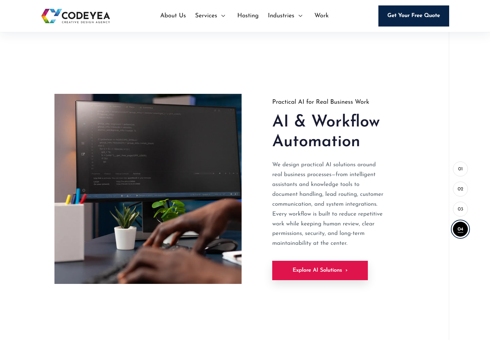

AI & Workflow Automation — slide 04
Saved in private About draft 6. Exact approved copy; temporary technical-work image; CTA has no destination.
Dimension caveat: desktop height is unchanged. The existing tablet/mobile auto-height layout grows to fit the longer approved copy. Styles and typography are unchanged; see the report for measurements.
Report · Checks · Save boundary
Desktop interaction
Mobile interaction
Desktop slide 04

Screenshots: 768px · 390px · 320px · Reduced motion